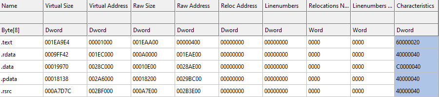
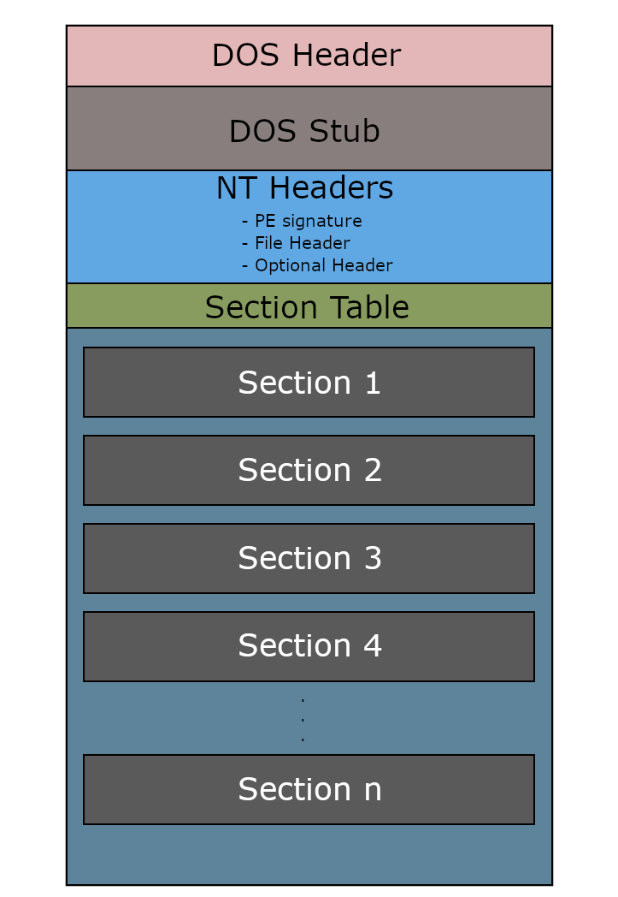
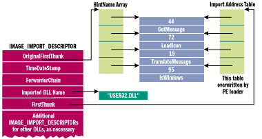

Published: March, 2023
Why learn to make a software packer? Software packers were originally, primarily used to compress executable images, but now large exe files aren’t much of an issue- now they’re mainly used for security, to make it harder to reverse engineer a binary. Malware authors are particularly fond of using software packers & otherwise manipulating the binary format in their favor. Making a software packer yourself is a good way to familiarize yourself with potential ways files can be manipulated, and even “infected” with malicious code. Knowing such can be of value to anyone interested in malware analysis & incident response.
**Note: Intended audience are fellow information security enthusiasts who are a bit newer to lower-level programming. It’s expected you have at least a decent grasp on virtual memory, pointers, and C. If you are already familiar with common concepts required for programming with binary formats then you can probably skim a good amount of this. I made it a bit in-depth when it comes to explaining some concepts which personally gave me trouble when I got started.
A software packer is typically composed of two programs: one which helps to bootstrap the encrypted image- commonly called the stub- and one which encrypts the target image before implanting it into the stub. The stub is very much akin to shellcode loaders which pull down their encrypted payloads from a C2. It can technically pull it’s PE image data from anywhere, but here we will detail a stub which the PE image from its own binary data.
Before you can program the packer, you must understand the binary format Windows uses for its executables, the Portable Executable format. Whenever you launch an exe file, it requires metadata for it to execute, such as the code itself, un/initialized data, and the linked libraries. All this metadata is contained within the executable image.
The order in which this metadata required for execution is arranged within the exe is as specified by the PE32+ format. When the program launches, Windows loads the exe file in its entirety into memory- more specifically, into the private address space delegated to the process for the program. Let’s touch on offsets before going over exactly how all this data is formatted within an exe file.
A concept that is essential to understand, is of the two types of offsets typically used within systems: raw offsets and relative virtual addresses. In computer science, an offset is defined as “an integer indicating the distance (displacement) between the beginning of the object and a given element or point, presumably within the same object”. For example, an offset of 4 from byte 8 within a file would get you to byte 12.
Within the headers of a PE32+ formatted executable, two different types of offsets are defined: relative virtual addresses (RVA) and raw offsets are defined to be used by the windows loader. The reason two different types of offsets are needed is due to Address Space Layout Randomization (ASLR). ASLR is a security feature which effectively increases the difficulty of exploiting memory vulnerabilities by randomizing which address the PE is loaded at. This makes hardcoding addresses for imports, and data impossible. However, they will always be at a fixed offset from the start address of where the PE is loaded.
When an PE image is loaded into memory by the windows loader, the first byte of where the image is loaded in memory is referred to as the “image’s base address” or as just the “image base”. Offset calculations typically look something like imagebase + offset.
Raw offsets are to be used when parsing the file while it is on disk. An example of when a raw offset would be used would be when parsing a PE image’s structures that you read into a byte vector or array. These types of offsets are defined within the headers as “PointerToRawData” fields.
Relative virtual addresses (RVAs) are to be used when interacting with a PE image which has already been loaded into memory. If a program is examining its own PE data while executing, then it would use RVAs to navigate the structures in memory. I will explain later exactly how the layout of the PE changes when it’s loaded into memory for execution. Let’s dive into the PE specification.
The PE32+ format starts with a few headers which contain metadata required to run the executable. It starts with the IMAGE_DOS_HEADER- the structure occupies the first 64 bytes of the executable. It does not contain many fields pertinent to parsing the binary format, but it does contain one vital field: e_lfanew. The e_lfanew field is the offset to the next header from the beginning of the file. The reason this field is required to calculate the memory address of the next header is because the next relevant header does not come directly after the 64 bytes of the IMAGE_DOS_HEADER.
There is a DOS stub & richer header in between them. The DOS stub is a bit of code that prints “This program cannot be run in DOS mode” when you attempt to run the exe in MS-DOS. The rich header is only present within binaries compiled by the MSVC toolchain, so it can be safely zero-filled. The rich header comes directly after the DOS stub.
Using the e_lfanew as an offset from the base of the file (byte 0), will get you the start of the IMAGE_NT_HEADERS. This structure is hugely important, and contains loads of information that is used by the windows image loader to execute binaries. The first field is the signature. It’s a four byte field identifying the file as a PE image with the bytes “PE\0\0”. The second field in the NT headers is a structure named IMAGE_FILE_HEADER, and the last is another structure which is hugely important- the IMAGE_OPTIONAL_HEADER. The IMAGE_NT_HEADERS schema is as below:
//0x108 bytes (sizeof)
struct _IMAGE_NT_HEADERS64
{
ULONG Signature; //0x0
struct _IMAGE_FILE_HEADER FileHeader; //0x4
struct _IMAGE_OPTIONAL_HEADER64 OptionalHeader; //0x18
};
The Fileheader struct has a few useful fields for manipulating the image, namely the NumberOfSections and SizeOfOptionalHeader field, but for the most part it doesn’t house much of interest. What’s more interesting however, is the struct after within the NT headers structure, the IMAGE_OPTIONAL_HEADER struct. Unlike the DOS header and File header, the optional header contains a lot of information which the windows image loader depends on.
The structure of the optional header is as follows:
//0xF0 bytes
struct _IMAGE_OPTIONAL_HEADER64
{
USHORT Magic; //0x0
UCHAR MajorLinkerVersion; //0x2
UCHAR MinorLinkerVersion; //0x3
ULONG SizeOfCode; //0x4
ULONG SizeOfInitializedData; //0x8
ULONG SizeOfUninitializedData; //0xc
ULONG AddressOfEntryPoint; //0x10
ULONG BaseOfCode; //0x14
ULONGLONG ImageBase; //0x18
ULONG SectionAlignment; //0x20
ULONG FileAlignment; //0x24
USHORT MajorOperatingSystemVersion; //0x28
USHORT MinorOperatingSystemVersion; //0x2a
USHORT MajorImageVersion; //0x2c
USHORT MinorImageVersion; //0x2e
USHORT MajorSubsystemVersion; //0x30
USHORT MinorSubsystemVersion; //0x32
ULONG Win32VersionValue; //0x34
ULONG SizeOfImage; //0x38
ULONG SizeOfHeaders; //0x3c
ULONG CheckSum; //0x40
USHORT Subsystem; //0x44
USHORT DllCharacteristics; //0x46
ULONGLONG SizeOfStackReserve; //0x48
ULONGLONG SizeOfStackCommit; //0x50
ULONGLONG SizeOfHeapReserve; //0x58
ULONGLONG SizeOfHeapCommit; //0x60
ULONG LoaderFlags; //0x68
ULONG NumberOfRvaAndSizes; //0x6c
struct _IMAGE_DATA_DIRECTORY DataDirectory[16]; //0x70
}
At the very end of the optional header is an array of 16 Data Directory structs. They function as indexes to the location of data tables which will be loaded in memory. Each Data Directory struct contains a relative virtual address to its corresponding table, and the size of the table. One of these tables is a huge point of interest when it comes to manipulating the PE32+ format, but we will go over that a bit later.
After the directories, comes the section headers. It’s an array of IMAGE_SECTION_HEADER structs, each of which describes a section, its sizes, name, relative virtual address, raw offset, and what memory permissions should be set on the pages the section is loaded into. Typically, files have around 6-8 sections. The text section is usually first, and it contains the bytes of the code to be executed. You can usually expect that there is a data section for initialized data, a rdata section for import data, pdata section for exception data, and a reloc section for relocation data. An example of what the section headers table may look like is included below:

**Note: Raw Address === Raw Offset && Virtual Address === RVA. This is always the case. Keep this in mind when reading MS documentation on the format.
Different compilers structure the sections of their output program in different ways. They may name sections differently, merge certain sections together, and use different algorithms to define where sections should be loaded into memory. The structure of a IMAGE_SECTION_HEADER is as below:
//0x28 bytes (sizeof)
struct _IMAGE_SECTION_HEADER
{
UCHAR Name[8]; //0x0
union
{
ULONG PhysicalAddress; //0x8
ULONG VirtualSize; //0x8
} Misc; //0x8
ULONG VirtualAddress; //0xc
ULONG SizeOfRawData; //0x10
ULONG PointerToRawData; //0x14
ULONG PointerToRelocations; //0x18
ULONG PointerToLinenumbers; //0x1c
USHORT NumberOfRelocations; //0x20
USHORT NumberOfLinenumbers; //0x22
ULONG Characteristics; //0x24
};
Understanding how the SizeOfRawData, VirtualSize, and VirtualAddress fields are calculated and utilized by the Windows image loader will save you a lot of heartache. So let’s dive into that a bit.
The virtual size of a section represents the actual amount of data within the section while the size of the raw data field represents the size of the data plus padding.SizeOfRawData is usually padded up to the next multiple of 0x200, or in computer science terms, it’s aligned up to 0x200. The file alignment for the executable is defined in the optional header in the FileAlignment field.
The VirtualAddress field defines the offset from the image’s base address, where that section will be loaded into memory by the Windows image loader. This field also must be aligned up to SectionAlignment, which is a field within the optional header. The Windows loader will perform the following calculation to load the section into memory when executing:
LPVOID SectionDestination = ImageBase + VirtualAddress;
The loader would then copy in the section’s data at the memory address contained within SectionDestination. After the section headers, come the sections themselves. A PE image loaded into memory would look something like this:

That almost just about covers the basic details of the PE32+ specification, but there are a few more important details, namely the import address table & relocations. However, these will be covered on the fly while going over the programming of the most difficult portion of making a software packer- the stub. First, let’s go over what must be accomplished to successfully “pack” a file.
Really at the core of what’s involved is copying a PE image into a slice of memory & then executing it in memory, while accommodating the softcore rules imposed by the PE32+ specification. This process requires two components: the packer itself & the stub. The stub is the program that will take in the PE image data, load it into memory, and then execute it. The packer is a program which will implant the target file into the stub by making an extra section within the stub, encrypting the target file, and then writing the encrypted bytes into the extra section.
We will make the stub first. Now let's lay down some code for step one: read a file into memory. The stub can source the PE image file data from anywhere really, but for this packer the PE image will be implanted into a new section name .xss.
We’ll source the file data from an extra, empty section which will be created in the stub. With that basic portion of theory on how this will work covered, we can begin to write some code:
#include <iostream>
#include <cstdlib>
#include <Windows.h>
#define VirtAddr2Pointer(T, VirtualBase, VirtualOffset) (T)((PBYTE)VirtualBase + VirtualOffset)
struct MemoryPE
{
LPVOID pPEBase = NULL;
PIMAGE_NT_HEADERS64 cpNTROOT = NULL;
};
We’ll include some stdout/in libraries for debugging along with Windows.h for the constants, types, and for the Win32 API. There’s a huge amount of pointer arithmetic to be done, so the macro helps to cut down on mistakes. Whenever you use arithmetic operators on pointers, the what actually happens is:
NewAddress = Pointer + (offset * size of type)
The macro casts the pointer to a byte pointer, so the offset is not multiplied by the type.
After defining the macro, the MemoryPE struct is defined. It’ll be used to pass important pointers between functions. pPEBase will hold the base address of the PE image in memory, while cpNTROOT will be a pointer to the NT headers structure for the PE image in memory.
Moving onto the first function, let’s handle the function which will extract the PE image from the .xss section:
MemoryPE LoadPEFromSection()
{
LPVOID hCurrentProcess = NULL;
LPVOID lpVirtBase = NULL;
MemoryPE sMemPE;
PIMAGE_DOS_HEADER pDosHead = NULL;
PIMAGE_NT_HEADERS64 pNTHead = NULL;
PIMAGE_SECTION_HEADER pSecHeadog = NULL;
// Get Mem Image base of current process && Err Check
hCurrentProcess = GetModuleHandleA(NULL);
if (hCurrentProcess == NULL)
{
printf("[-] Failed to get Base Memory Address\n");
exit(1);
}
// Parse PE
pDosHead = (PIMAGE_DOS_HEADER)hCurrentProcess;
pNTHead = VirtAddr2Pointer(PIMAGE_NT_HEADERS64, hCurrentProcess, pDosHead->e_lfanew);
pSecHeadog = IMAGE_FIRST_SECTION(pNTHead);
So, this function will return a MemoryPE struct and it takes no parameters. In order to get to the data which is held in the stub’s .xss section, we need to parse the PE headers of the stub itself. First, we define a few variables which will be initialized later, including the sMemPE which will be returned. After that, we must access the base address of the stub to parse its headers. Thankfully, there is a very easy way to access the base address of the stub during runtime with this line:
hCurrentProcess = GetModuleHandleA(NULL);
GetModuleHandleA will return the base address of the current process if passed NULL (0). Recall that the Windows loader maps every byte of an exe into memory, so we can parse the whole of the currently executing program from this. We call GetModuleHandleA and then error check. In order to parse the first PE header of the stub from the base address, we cast the pointer to a PIMAGE_DOS_HEADER type and save it to pDosHead. Next, the macro is used to calculate imagebase + e_lfanew from the DOS header, which will give us a pointer to the NT headers. Microsoft graciously provides an IMAGE_FIRST_SECTION macro which will give you the first section header if you give it a pointer to the NT headers, which makes getting a pointer to the first section header easy.
To get the data out of the .xss section, we will iterate through the section headers to get the desired offset to .xss’s data. We will iterate by adding IMAGE_SIZEOF_SECTION_HEADER * index to a copy of our first section header pointer:
for (int i = 0; i < pNTHead->FileHeader.NumberOfSections; i++)
{
PIMAGE_SECTION_HEADER pSecHead = (PIMAGE_SECTION_HEADER)((DWORDLONG)pSecHeadog + (IMAGE_SIZEOF_SECTION_HEADER * i) );
BYTE cTargetName[8] = ".xss\0\0\0";
BYTE cSecName[8] = { pSecHead->Name[0],pSecHead->Name[1], pSecHead->Name[2], pSecHead->Name[3], pSecHead->Name[4], pSecHead->Name[5], pSecHead->Name[6], pSecHead->Name[7] };
printf("[*} Searching Section: %s\n", cSecName);
if (strcmp((char*)cTargetName, (char*)cSecName) == 0)
{
DWORD dSize = pSecHead->SizeOfRawData;
PBYTE bSecData = VirtAddr2Pointer(PBYTE, hCurrentProcess, pSecHead->VirtualAddress);
FlagCorrect(pSecHead);
printf("[*] XSS Section Found\n");
// returns pointer to image in memory
lpVirtBase = MapData(bSecData,pSecHead->Misc.VirtualSize, pSecHead);
sMemPE.pPEBase = lpVirtBase;
return sMemPE;
}
}
}
Every loop, we will compare the name of the current section loaded into pSecHead. Once the right section is found, we save the size of the data, use the section’s RVA (relative virtual address) to get a pointer to the PE data, and call the FlagCorrect function which will be the last function covered as it’s relatively unimportant. After that, the PE data from the .xss section is mapped into memory according to the extracted PE’s section headers with the MapData function.
br>
Mapping the PE image into memory appropriately, as to appease the intel and Window’s data execution constraints, is handled by the MapData function. It’s a bit of a longer function, but I will explain almost every line as this was probably the hardest function to get right. For parameters, it takes a pointer to the memory region to copy bytes from, the number of bytes in the PE image, and a pointer to the section header of the section which contains all the PE image data.
LPVOID MapData(LPVOID SrcBuffer, DWORD dByteCount, PIMAGE_SECTION_HEADER pXSSHeader)
{
printf("============== MAPPING HEADERS\n");
//------------Header mapping
PIMAGE_DOS_HEADER pSrcDos = (PIMAGE_DOS_HEADER)SrcBuffer;
PIMAGE_NT_HEADERS64 pNTSrc = VirtAddr2Pointer(PIMAGE_NT_HEADERS64, SrcBuffer, pSrcDos->e_lfanew);
PIMAGE_SECTION_HEADER pSecSrc = IMAGE_FIRST_SECTION(pNTSrc);
LPVOID lpVirtBase = VirtualAlloc(NULL, pNTSrc->OptionalHeader.SizeOfImage, MEM_COMMIT | MEM_RESERVE, PAGE_READWRITE);
if (lpVirtBase == NULL)
{
printf("[-] Failure Allocating Memory\n");
exit(1);
}
memcpy_s(lpVirtBase, pNTSrc->OptionalHeader.SizeOfImage, SrcBuffer, pNTSrc->OptionalHeader.SizeOfHeaders);
Headers of the extracted PE are parsed, and then VirtualAlloc is called to allocate memory for the PE, using the SizeOfImage field from the optional header as the size parameter. A null is used to make sure a memory address was returned into lpVirtBase. Next, memcpy_s is used to copy the PE’s headers into the allocated memory block. In the next block of code, the section data is copied into the allocated memory block after the headers. Before that though, pointers to the headers which were just copied into the new memory block are collected as they’ll be needed to copy data betwixt the .xss section and the allocated memory for the PE:
PIMAGE_DOS_HEADER pDOs = (PIMAGE_DOS_HEADER)lpVirtBase;
PIMAGE_NT_HEADERS64 pNT = VirtAddr2Pointer(PIMAGE_NT_HEADERS64, lpVirtBase, pDOs->e_lfanew);
PIMAGE_SECTION_HEADER pSecHeader = IMAGE_FIRST_SECTION(pNT);
for (; pSecHeader->VirtualAddress != 0; pSecHeader++)
{
LPVOID lpDest = VirtAddr2Pointer(LPVOID, lpVirtBase, pSecHeader->VirtualAddress);
LPVOID lpDataSrc = VirtAddr2Pointer(LPVOID, SrcBuffer, pSecSrc->PointerToRawData);
printf("\t===== %s\n", (char*)pSecHeader->Name);
printf("\t\t[*] Loading at VirtualAddress: 0x%p\n", lpDest);
printf("\t\t[*] Section Raw Data Count: 0x%x\n", pSecHeader->SizeOfRawData);
if (pSecHeader->SizeOfRawData > 0) memcpy_s(lpDest, pNTSrc->OptionalHeader.SizeOfImage, lpDataSrc, pSecHeader->SizeOfRawData);
else memset(lpDest, 0, pSecHeader->Misc.VirtualSize);
pSecSrc++;
}
return lpVirtBase;
}
A for loop is used, looping until the VirtualAddress field is equal to zero, incrementing the pointer each time to move to the next index in the array of section headers. Two void pointers are declared, one which will point to the data source-lpDataSrc, and one which will point to the destination for the data copy operation- lpDest. The lpDest is calculated using the VirtualAddress field, mimicking what the Windows loader does by loading the PE into memory according to the RVA in the section header. In contrast, the pointer to the data source in lpDataSrc is calculated with the PointerToRawData field (raw offset), as the PE image within the .xss section is the same as it is on disk.
We check if the section has data to copy via making sure the SizeOfRawData is greater than 0, and if so, we copy the section’s data into the allocated memory block, using the two void pointers that were defined first within the loop. Just in case the SizeOfRawData is zero, we zero-fill the section. Last in the loop, the pSecSrc pointer is incremented to keep the two section header pointer in sync for the memory copy operations.
For a moment, let us discuss how imports are handled at a high level, as the imports for the loaded PE must be accounted for, lest the code will crash. In windows, exe’s define their imports within a table called the Import Directory Table (IDT). It contains the names of the libraries required to run the PE, along with the name of every function required as well. During runtime, the windows loader reads the Import Lookup Table (ILT) , loads the required DLLs into memory, and then fills the Import Address Table
(IAT) with pointers to the required functions for the PE image.

To be more specific on this procedure carried out by the windows loader- index number two within the DataDirectory array within the optional headers contains the size & RVA (relative virtual address) to an array of IMAGE_IMPORT_DESCRIPTORS, one for each DLL imported. This array of import descriptors is the IDT. The import descriptor structure has the following members: OriginalFirstThunk, TimeDateStamp, ForwarderChain, ImportedDLLName, and FirstThunk. Three of these are RVAs, the FirstThunk, OriginalFirstThunk, and the ImportedDLLName. The original first thunk points to the ILT array for the DLLs functions, and the first thunk points to the IAT array for the DLL functions. ImportedDLLName is also a useful offset, which will give you a pointer to the DLL’s name.
Both the ILT & IAT are identical arrays of PIMAGE_THUNK_DATA64 structs. The structure of IMAGE_THUNK_DATA64 is shown below:
LPVOID Function; // Memory address of imported function
DWORD Ordinal; // Ordinal value of imported API
DWORD AddressOfData; // RVA to an IMAGE_IMPORT_BY_NAME with the API name
DWORD ForwarderString; // RVA to a forwarder string
In the ILT array, the Ordinal & AddressOfData fields are of interest. The AddressOfData field is an offset to an IMAGE_IMPORT_BY_NAME structure, which is only 24 bytes long. The import by name struct is just a WORD “Hint” field & the name of a function. As for the ordinal, it can be used as an alternative to the name to load a function.
Within the IAT array, it’s only really necessary to fill the long void pointer field that holds the address of a function- the field for the address is just named “Function”, as shown above within the PIMAGE_THUNK_DATA64 struct.
As for the code responsible for performing this patching- after the PE image’s sections are loaded into memory blocks, the second index’s pointer within of the Data Directory must be followed to the ILT & IAT:
*Note: in my code, the ILT is labeled as IDT
DWORD dImportRVA = pNT->OptionalHeader.DataDirectory[1].VirtualAddress;
PIMAGE_IMPORT_DESCRIPTOR pImportDescriptor = VirtAddr2Pointer(PIMAGE_IMPORT_DESCRIPTOR, sMemPE.pPEBase, dImportRVA);
printf("[*] Searching For DLL Names...\n");
for (; pImportDescriptor->Name != NULL; pImportDescriptor++)
{
LPCSTR cModuleName = VirtAddr2Pointer(LPCSTR, sMemPE.pPEBase, pImportDescriptor->Name);
HMODULE hImportModule = LoadLibrary(cModuleName);
if (hImportModule == NULL)
{
printf("[-] Failure Loaidng Module...\n");
}
printf("\n\n============ %s \n", cModuleName);
PIMAGE_THUNK_DATA64 pIDTEntry = NULL;
if (pImportDescriptor->OriginalFirstThunk != NULL) pIDTEntry = VirtAddr2Pointer(PIMAGE_THUNK_DATA64, sMemPE.pPEBase, pImportDescriptor->OriginalFirstThunk);
else pIDTEntry = VirtAddr2Pointer(PIMAGE_THUNK_DATA64, sMemPE.pPEBase, pImportDescriptor->FirstThunk);
PIMAGE_THUNK_DATA64 pIATEntry = VirtAddr2Pointer(PIMAGE_THUNK_DATA64, sMemPE.pPEBase, pImportDescriptor->FirstThunk);
// Patch addresses in IAT
for (; pIDTEntry->u1.AddressOfData; pIDTEntry++, pIATEntry++)
{
LPVOID lpFunctionAddress = NULL;
// Get address of function name
DWORD lpFunctionNameRVA = pIDTEntry->u1.AddressOfData;
An import descriptor is formed by following the second index’s RVA. There is an import descriptor for every imported .Lib/.Dll, so we iterate through them. ImportDescriptor->Name contains an RVA to the modules name, so it’s followed and then the modules name is used to call LoadLibrary.
For every function in the module, there is a corresponding ILT & IAT entry in the form of IMAGE_THUNK_DATA64s. We iterate through them by making pointers from OrginialFirstThunk for the ILT & FirstThunk for the IAT, and then incrementing these pointers, as the array of these structs is ended with a zero filled entry.
Within this iteration loop, the actual function address is produced and patched into the corresponding IAT entry. First in the loop, we need to get the name of the function from the ILT, and then use the name or ordinal to call GetProcAddress, which will give us the address of a function within a module:
if (IMAGE_SNAP_BY_ORDINAL64(pIDTEntry->u1.Ordinal) == 0)
{
pImportNameStruct = VirtAddr2Pointer(PIMAGE_IMPORT_BY_NAME, sMemPE.pPEBase, lpFunctionNameRVA);
char* lpFunctionName = (char*)&(pImportNameStruct->Name);
printf("\t\t[*] Loading Function %s\n", lpFunctionName);
lpFunctionAddress = GetProcAddress(hImportModule, lpFunctionName);
if (lpFunctionAddress == NULL)
{
printf("\t\t[-] Failure Getting Function Address\n");
exit(1);
}
}
else
{
lpFunctionAddress = GetProcAddress(hImportModule, (LPSTR) & (pIDTEntry->u1.Ordinal));
if (lpFunctionAddress == NULL)
{
printf("\t\t[-] Failure Getting Function Address\n");
exit(1);
}
printf("\t\t[*] Loading By Ordinal: 0x%p", pIDTEntry->u1.Ordinal);
}
pIATEntry->u1.Function = (DWORDLONG)lpFunctionAddress;
}
Functions can also be imported via ordinal, so IMAGE_SNAP_BY_ORDINAL64 is used to check if the ordinal is set. If the ordinal is not used, which is typically the case, then it will set pImportnamesrtruct which has a type of IMAGE_IMPORT_BY_NAME (which isn’t exactly documented) to imagebase + lpFunctionNameRVA. There is one IMAGE_IMPORT_BY_NAME struct per function imported from the module, and the name field will be used to call GetProcAddress.
If the ordinal is set, then there is no need to follow the pointer to the IMAGE_IMPORT_BY_NAME strictly as the ordinal can directly be used to call GetProcAddress, though it does not look pretty. In both cases, the returned value from GetProcAddress ends up being saved to pIATEntry->u1.Function which patches the function. That’s all there is for patching the imports.
The last thing on the list is to patch the relocations for the PE image. The relocations table is basically just a list of addresses in the image which need the delta value added to them. Due to ASLR, a PE image does not have any information regarding where it will be loaded in memory, so certain addresses must be updated at run-time.
**Note: A delta is defined by “a change in something”. I.e: If you add 4 to 8 you get 12. Then 12 - delta = 8. In this example, 8 was modified by 4, making 4 the delta.
Obtaining the delta value is easy, the calculation is (imagebase - NT.OptionalHeader.ImageBase). Once we have that obtained, we can parse the relocations and then update them by adding the delta. The RVA to the relocations can be found within the Data Directory, index 6 (constant IMAGE_DIRECTORY_ENTRY_BASERELOC). The first code segment for relocations:
MemoryPE RelocManage()
{
// Transfer pointers for PE in memory + NT Header
MemoryPE sMemPE = ParseUnpackedPE();
// Calculate how much we shift the Image base as compared to where it expects to be loaded
DWORDLONG dDeltaShift = ((DWORDLONG)sMemPE.pPEBase - sMemPE.cpNTROOT->OptionalHeader.ImageBase);
DWORD dOffset = sMemPE.cpNTROOT->OptionalHeader.DataDirectory[IMAGE_DIRECTORY_ENTRY_BASERELOC].VirtualAddress;
if (sMemPE.cpNTROOT->OptionalHeader.DataDirectory[IMAGE_DIRECTORY_ENTRY_BASERELOC].VirtualAddress != 0 && dDeltaShift != 0)
Above, we collect the image base delta by subtracting the image base from the expected image base in OptionalHeader.ImageBase, as well as the offset to the relocation table. Armed with the offset and the delta, we check to make sure there’s a valid table, then begin iteration over the relocations table. Continuing on with the code from the last if statement:
{
// Init pointer for the Image base relocations array || const, make copy in iteration below, something something, immutable data, something something
PIMAGE_BASE_RELOCATION pBaseReloc = VirtAddr2Pointer(PIMAGE_BASE_RELOCATION, sMemPE.pPEBase, dOffset);
// Gather count of elements by : (SizeOfBlock - sizeof(IMAGE_BASE_RELOCATION)) / sizeof(WORD) = Relocation Element Count Array | from MSDN
printf("\t[*] Relocations present...\n");
int icount = 0;
// while (pBaseReloc->VirtualAddress != 0) || this potentially works, but changing it for now. may change back later to see if it's a viable check
while (pBaseReloc->VirtualAddress != 0)
{
DWORD dRelocElementCount = (pBaseReloc->SizeOfBlock - sizeof(IMAGE_BASE_RELOCATION)) / sizeof(WORD);
printf("\t[*] Number of Relocations in Block: %d\n", dRelocElementCount);
// Iterate via copy's index in loop
for (INT i = 0; i < dRelocElementCount; ++i)
{
// Add size of base relocations to the base of the relocation base in memory to get the start of relocation word arrays
PWORD pwRelocDat = (PWORD)(pBaseReloc + 1);
// wReloc is 16-bits (2-bytes), so get higher 4 bits by shifting 12 bits to the right
UINT iType = pwRelocDat[i] >> 12;
// Offset is in the last 12 bits - 0xFFF = 0000 0000 1111 1111 1111 | ---- ----
DWORD iOffset = pwRelocDat[i] & 0x0FFF;
// pointer to a x64 bit address in memory we must alter
PDWORDLONG pAddrChange = (PDWORDLONG)((PBYTE)sMemPE.pPEBase + pBaseReloc->VirtualAddress + iOffset);
switch (iType) {
case IMAGE_REL_BASED_DIR64:
*pAddrChange += dDeltaShift;
break;
case IMAGE_REL_BASED_HIGHLOW:
*pAddrChange += (DWORD)dDeltaShift;
break;
case 0x0:
continue;
default:
printf("[-] Unrecognized Reloc Type: 0x%x\n", iType);
exit(1);
}
}
// iterate by adding size of block to relocation base at end of while
pBaseReloc = VirtAddr2Pointer(PIMAGE_BASE_RELOCATION, pBaseReloc, pBaseReloc->SizeOfBlock);
icount++;
}
printf("========Relocation Done - Blocks Processed: %d\n", icount);
}
return sMemPE;
}
First up, pBaseReloc is loaded with a pointer to the relocation table by using the previously acquired offset. The relocations table is structured within blocks, so every entry is a block which also must be iterated over for parsing. I also declared a icount variable to keep track of how many blocks I processed for debugging purposes.
The base relocations table is ended with a zero-filled entry, so a while loop is used to iterate until the virtual address field is equal to zero. Before anything can happen within the while loop, we need to find out how many relocation blocks are within the table. MS documentation provides the following formula:
RelocationElementCount = (PIMAGE_BASE_RELOCATION->SizeOfBlock - sizeof(IMAGE_BASE_RELOCATION)) / sizeof (WORD)
We’ll use that formula, and then use the relocation block count as the stop condition for a for loop. Inside of “for (INT i = 0; i < dRelocElementCount; ++i)” is where most of the logic of the function is housed.
A variable- pwRelocDat is the PIMAGE_BASE_RELOCATIONS incremented by one (two bytes) in order to get past the relocation “header” and get into the word arrays. These word arrays are mini-structures, with the first 4 bits representing the type of relocation, and the last 12 bits representing an offset to the virtual address which must be updated with the delta.
First 4 bits are isolated with a right bit-shift of 12, knocking off the undesired lower bits. Last 12 bits are isolated with a mask of 0xFFF.
There are different types of relocations, typically corresponding to the bitness of the image. We define some cases for the type based on whether it’s a 32 or 64 bit relocation. Either way, it’s added to the address contained with pAddrChange.
Outside of the for loop, and back into the while loop, we move to the next IMAGE_BASE_LOCATIONS index. The process will repeat until hitting the zero-filled entry of the relocations table.
The last function is the setup function. Its main job is to start the call chain, which starts with relocmanage(), and to fix up the page permissions so they are as expected for image execution.
MemoryPE Setup()
{
MemoryPE sMemPE = RelocManage();
PIMAGE_SECTION_HEADER pSecRef = IMAGE_FIRST_SECTION(sMemPE.cpNTROOT);
printf("\n========VIRTUAL PERMISSIONS\n\n");
DWORD dOldone;
xx = VirtualProtect(sMemPE.pPEBase, sMemPE.cpNTROOT->OptionalHeader.SizeOfHeaders, PAGE_READONLY, &dOldone);
for (int i = 0; i < sMemPE.cpNTROOT->FileHeader.NumberOfSections; ++i)
{
PIMAGE_SECTION_HEADER pSecHead = (PIMAGE_SECTION_HEADER)((DWORDLONG)pSecRef + ((DWORD_PTR)IMAGE_SIZEOF_SECTION_HEADER * i));
BYTE* pTarget = (BYTE*)((DWORDLONG)sMemPE.pPEBase + pSecHead->VirtualAddress);
DWORD dOld = NULL;
char* cSecName = (char*)pSecHead->Name;
DWORD dSPerms = pSecHead->Characteristics;
int x = 0;
CONST DWORD dImageCodeFlag = 0x60000020; // Read (0x40000000) + Execute (0x40000000) + Code Flag (0x20)
CONST DWORD dImageInitDatFlag = 0x40000040; // Read (0x40000000) + Inited Data (0x40)
switch (dSPerms) {
case dImageCodeFlag:
x = VirtualProtect(pTarget, pSecHead->Misc.VirtualSize, dImageCodeFlag, &dOld);
if (x == 0) printf("[-] Virtual permission setting failed\n");
printf("\t[*] %s Section Permissions: IMAGE_SCN_CNT_CODE\n", cSecName);
break;
default:
x = VirtualProtect(pTarget, pSecHead->Misc.VirtualSize, PAGE_READWRITE, &dOld);
if (x == 0) printf("[-] Virtual permission setting failed\n");
printf("\t[*] %s Section Permissions: IMAGE_SCN_MEM_READ\n", cSecName);
break;
}
}
return sMemPE;
}
By now, this pattern of iterating over structures should be pretty familiar. We set RO on the headers on the image, set RW for all sections without need for execute permissions, and set 0x60000020 on the code section for RX + the code flag of 0x20. Once main returns from the latter code segments of Setup(), all that is left is to derive the entry point of the image in memory, then execute:
int main()
{
// setup will load a pe image from a section into memory, patch imports + relocations, then set virtual permissions
MemoryPE sMemPE = Setup();
// Derive entry point
LPVOID dEntry = VirtAddr2Pointer(LPVOID, sMemPE.pPEBase, sMemPE.cpNTROOT->OptionalHeader.AddressOfEntryPoint);
printf("\n========== PACKED PROGRAMS OUTPUT:\n\n");
void (*EnterNow)(void) = (void(*)())dEntry;
EnterNow();
return 0;
}
OptionalHeaders contains an offset which can be followed to get the entry point. Once followed, the PE image can basically be cast to a function pointer, and subsequently called.
That’s all for the first portion, and the hardest portion. The next part will cover making the packer which will insert data into the .xss section. It will be much shorter as all the relevant concepts have been covered here.
Thanks for reading, and I hope it helps.